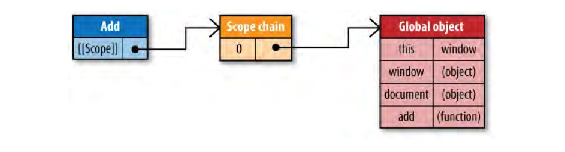
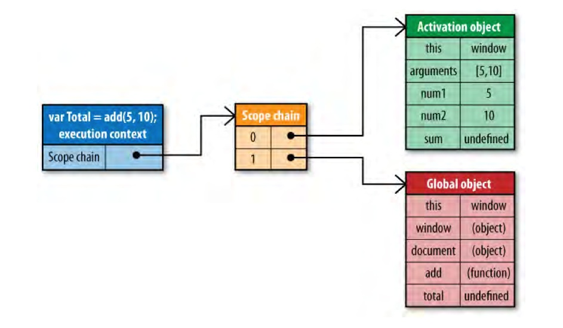
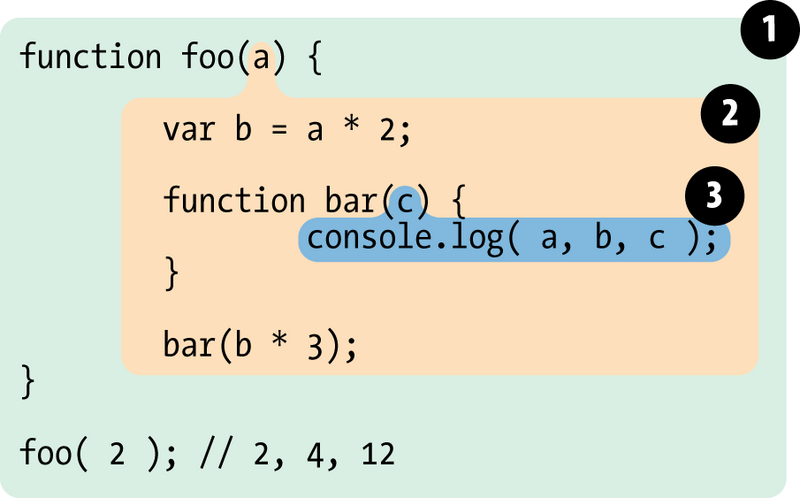
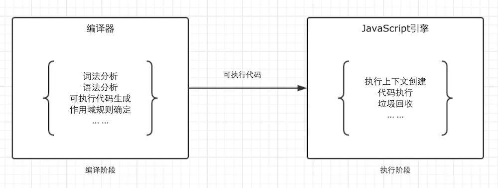
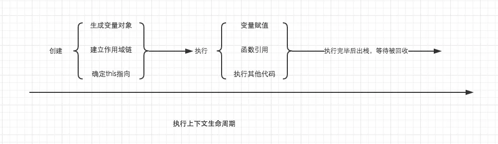
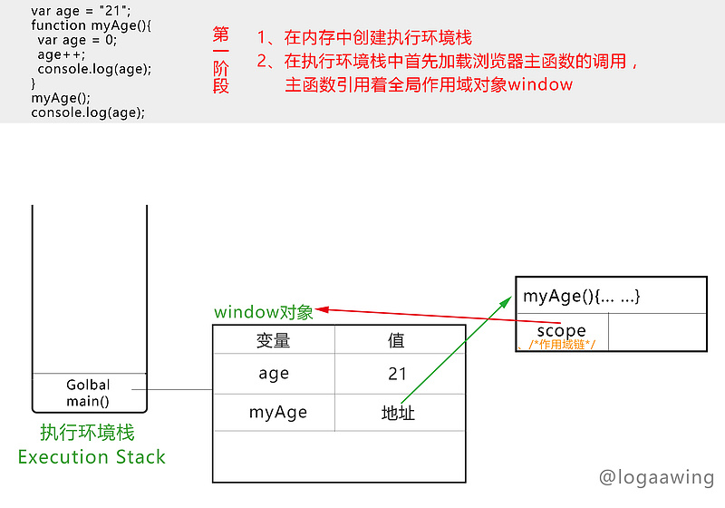
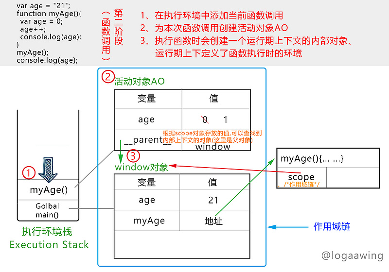
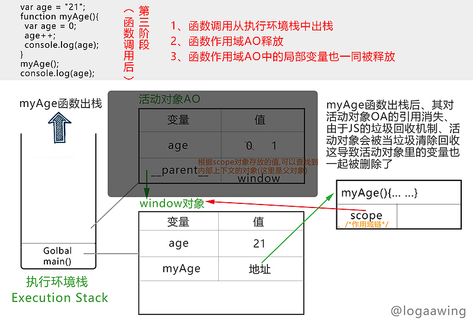

再谈 js 作用域
在上一篇js作用域链和闭包中讲的有点没头绪, 重新梳理下, 多看参考链接的第一篇, 搞清编译时和运行时的作用域链和执行上下文的区别.
看那 4 篇就够了
scope, scope chain, execution context, context 的区别
先解释下函数和作用域的关系
每一个JavaScript函数都被表示为object,进一步, as an instance of Function, 函数对象和其他对象一样, 拥有你可以编程访问的属性, 和一系列不能被访问, 但仅供JavaScript引擎使用的内部属性. 其中一个内部属性就是[[scope]].
这个内部属性[[scope]]包含一个代表作用域scope的对象集合, 这个集合是在函数被创建时产生的. 这个集合叫函数的作用域链, 他决定了函数能访问哪些数据. 这个集合中的每个对象叫做可变对象variable object. 当一个函数被创建后, 他的作用域链就有这些对象.
上面的创建指写好代码, 只是定义哦, 还没运行呢.
作用域 scope
作用域是你的代码在运行时(不运行时的预处理阶段也是可以产生的静态作用域链, 是非自己部分的哦)，各个变量、函数和对象的可访问性。换句话说，作用域决定了你的代码里的变量和其他资源在各个区域中的可见性。
js 有 3 种作用域, 全局作用域(Global context： window/global), 局部作用域(Local Scope , 又称为函数作用域 Function context), 块级作用域{}和const let
上下文 context
上下文指的是在相同的作用域中的this的值, 这里this是在调用时确定的(本函数的this值), 而作用域scope也是运行时才有的. 所以没错.
例子 add()
主要是看这个链接
JavaScript 核心概念之作用域和闭包 666
1 | function add(num1, num2) { |
Scope Chain（作用域链）
作用域链的非自己部分在函数对象被建立（函数声明、函数表达式）的时候建立，而不需要等到执行，这部分作用域链是静态的；当函数执行时，建立一个自己当次执行的作用域，然后把这个作用域与前面的作用域链关联起来
所以, 当定义 add 函数后，其作用域链就创建了。函数所在的全局作用域的全局对象被放置到 add 函数作用域链（[[scope]] 属性）中。我们可以从下图中看到作用域链的第一个对象保存的是全局对象，全局对象中保存了诸如 this , window , document 以及全局对象中的 add 函数，也就是他自己。这也就是我们可以在全局作用域下的函数中访问 window(this)，访问全局变量，访问函数自身的原因。
作用域链在稍后的执行函数时使用。当然还有函数作用域不是全局的情况，等会儿我们再讨论。

上面这个链接讲了 JavaScript 的词法作用域
Execution Context（执行期上下文）
也分全局执行期上下文和函数执行期上下文
假设我们运行以下代码：
1 | var total = add(5, 10); |
执行该函数创建一个内部对象，称为 Execution Context（执行期上下文）。执行期上下文定义了一个函数正在执行时的作用域环境。
特别注意，执行期上下文和我们平常说的上下文不同，
执行期上下文指的是作用域scope。平常说的上下文是this的取值指向。
执行期上下文和函数创建时的作用域链对象[[scope]]区分，这是两个不同的作用域链对象。分开的原因很简单，函数定义时的作用域链对象 [[scope]] 是固定的，而 执行期上下文 会根据不同的运行时环境变化。而且该函数每执行一次，都会创建单独的 执行期上下文，因此对同一函数调用多次，会导致创建多个执行期上下文。一旦函数执行完成，执行期上下文将被销毁。
函数定义时函数对象的属性是
[[scope]],而Execution Context（执行期上下文）的属性是scope chain
执行期上下文对象有自己的作用域链，当创建执期行上下文时，其作用域链将使用执行函数[[scope]]属性所包含的对象（即，函数定义时的作用域链对象）进行初始化。这些值按照它们在函数中出现的顺序复制到执行期上下文作用域链中。
Activation Object（激活对象）
随后，在执行其上下文中创建一个名为 Activation Object（激活对象）的新对象。 这个激活对象AO保存了函数中的所有形参，实参，局部变量，this 指针等函数执行时函数内部的数据情况。然后将这个激活对象推送到执行其上下文作用域链的顶部。
激活对象AO是一个可变对象，里面的数据随着函数执行时的数据的变化而变化，当函数执行结束之后，执行期上下文将被销毁。也就会销毁Execution Context的作用域链，激活对象也同样被销毁。但如果存在闭包，激活对象就会以另外一种方式存在，这也是闭包产生的真正原因，具体的我们稍后讨论。下图显示了执行上下文及其作用域链：

从左往右看，第一部分是函数执行时创建的执行期上下文，它有自己的作用域链，第二部分是作用域链中的对象，索引为1的对象是从[[scope]]作用域链中复制过来的，索引为0的对象是在函数执行时创建的激活对象AO，第三部分是作用域链中的对象的内容Activation Object(激活对象)和Global Object(全局对象)。
函数在执行时，每遇到一个变量，都会去执行期上下文的作用域链的顶部，执行函数的激活对象开始向下搜索，如果在第一个作用域链（即，Activation Object 激活对象）中找到了，那么就返回这个变量。如果没有找到，那么继续向下查找，直到找到为止。如果在整个执行期上下文中都没有找到这个变量，在这种情况下，该变量被认为是未定义的。这也就是为什么函数可以访问全局变量，当局部变量和全局变量同名时，会使用局部变量而不使用全局变量，以及 JavaScript 中各种看似怪异的、有趣的作用域问题的答案。
闭包
尤其是注意闭包的定义哦, 要使用到父函数的变量
这个看js作用域链和闭包中的闭包
再说下一道经典的题啊, 涉及闭包, 作用域, 内核线程, 事件队列, 进一步还可以考this
1 | var obj = { |
这道题我觉得应该首先看从输入URL到页面加载发生了什么 中多进程浏览器,和多线程内核, event loop. js立即执行函数(来形成作用域块)
尤其是内核和event loop, js 引擎和计时器是不同的线程, js 引擎是单线程的哦. 这样你就懂了为啥会这么输出.
在 4 个循环下, 在 js 栈中就会触发 4 次计时器, 等同步的执行完, 再会执行事件队列中的, 而各个计时器线程又不打扰. 所以栈中 for 执行完后, 等事件队列, 事件队列都是 1 秒后执行完. 然而这时的 i 就是 5, 所以大家都输出 5
解法是用
setTimeout 循环闭包的经典面试题 解法与探究
setTimeout 函数之循环和闭包 6 还可以
图例详解那道 setTimeout 与循环闭包的经典面试题 666
你所不知道的 setTimeout
JavaScript 的词法作用域
看完闭包后要看这个链接巩固, 在整体回顾.
上面这个链接讲了 JavaScript 的词法作用域
简要说下:
如果一个文档流中包含多个 script 代码段（用 script 标签分隔的 js 代码或引入的 js 文件），它们的运行顺序是：
- 读入第一个代码段（js 执行引擎并非一行一行地分析程序，而是一段一段地分析执行的）
- 做词法分析，有错则报语法错误（比如括号不匹配等），并跳转到步骤 5
- 对
var变量和function定义做“预解析“（永远不会报错的，因为只解析正确的声明） - 执行代码段，有错则报错（比如变量未定义）
- 如果还有下一个代码段，则读入下一个代码段，重复步骤 2
- 完成
JavaScript 解析过程
从前面的例子 add()回顾下
JavaScript 中每个函数都都表示为一个函数对象（函数实例），函数对象有一个仅供 JavaScript 引擎使用的[[scope]] 属性。通过语法分析和预解析，将[[scope]] 属性指向函数定义时作用域中的所有对象集合。这个集合被称为函数的作用域链（scope chain），包含函数定义时作用域中所有可访问的数据。
对应的图是:
JavaScript 执行过程
执行具体的某个函数时，JS 引擎在执行每个函数实例时，都会创建一个执行期上下文（Execution Context）和激活对象（active Object）（它们属于宿主对象，与函数实例执行的生命周期保持一致，也就是函数执行完成，这些对象也就被销毁了，闭包例外。）
执行期上下文（Execution Context）定义了一个函数正在执行时的作用域环境。它使用函数[[scope]]属性进行初始化。
随后，执行期上下文 顶部 的会创建一个激活对象（active Object），这个激活对象保存了函数中的所有形参，实参，局部变量，this 指针等函数执行时函数内部的数据情况。这个时候激活对象中的那些属性并没有被赋值，执行函数内的赋值语句，这才会对变量集合中的变量进行赋值处理。也就是说 激活对象是一个可变对象，里面的数据随着函数执行时的数据变化而变化。
🌰
考虑一下下图中的代码：

分析过程：
- 作用域 1 (绿色) ：即全局作用域，包含变量
foo; - 作用域 2 (黄色) ：
foo函数的作用域，包含变量a,bar,b - 作用域 3 (蓝色) ：
bar函数的作用域，包含变量c
bar 作用域里完整的包含了 foo 的作用域, 因为 bar 是定义在 foo 中的，产生嵌套作用域。值得注意的是，一个函数作用域只有可能存在于一个父级作用域中，不会同时存在两个父级作用域。还有诸如this , window , document等全局对象这里就不说了，避免混乱。
执行过程：
- 语句
console.log寻找变量a,b,c; - 其中
c在自己的作用域中找到， a，b在自己的作用域中找不到，于是向上级作用域中查找，在foo的作用域中找到，并且调用。
函数在执行时，每遇到一个变量，都会去执行期上下文的作用域链的顶部，也就是执行函数的激活对象开始搜索，如果在第一个作用域链（即，Activation Object 激活对象）中找到了，那么就返回这个变量。如果没有找到，那么继续向下查找，直到找到为止。如果在整个执行期上下文中都没有找到这个变量，在这种情况下，该变量被认为是未定义的。也就是说如果foo的作用域中也定义了c，但bar函数只调用自己作用域里的c。这就是我们说的变量取值。
关于形参, 实参, 同名局部变量的关系
1 | function one(a,b,c) { |
1 | function DoSomething(a) |
打印的结果是1,1,2,2。从上面的代码可以看到，参数a和局部变量a值是完全相同的，即使是局部变量a重新定义和赋值之后。这样就好理解了，参数和同名变量之间是 “引用” 关系，也就是说 JavaScript 引擎的处理参数和同名局部变量是都引用同一个内存地址。所以示例 5 中修改局部变量会影响到arguments的情况出现。
再展开, execution context 中有什么
看这个链接中的东西
了解 JavaScript 的执行上下文
由变量提升谈谈 JavaScript Execution Context
什么是执行上下文？
让我们将术语执行上下文想象为当前被执行代码的环境/作用域。说的够多了，现在让我们看一个包含全局global context和函数上下文execution context的代码例子

很简单的例子，我们有一个被紫色边框圈起来的全局上下文和三个分别被绿色，蓝色和橘色框起来的不同函数执行上下文。只有全局上下文（的变量）能被其他任何上下文访问。
你可以有任意多个函数上下文，每次调用函数创建一个新的上下文，会创建一个私有作用域，函数内部声明的任何变量都不能在当前函数作用域外部直接访问。在上面的例子中，函数能访问当前上下文外面的变量声明，但在外部上下文不能访问内部的变量/函数声明。
执行上下文堆栈 这个看链接, 也可以看那个 event loop
浏览器里的JavaScript解释器被实现为单线程。这意味着同一时间只能发生一件事情，其他的行文或事件将会被放在叫做执行栈里面排队。下面的图是单线程栈的抽象视图：

有 5 个需要记住的关键点，关于执行栈（调用栈）：
- 单线程。
- 同步执行。
- 一个全局上下文。
- 无限制函数上下文。
- 每次函数被调用创建新的执行上下文，包括调用自己。
执行上下文的细节 666
我们现在已经知道每次调用函数，都会创建新的执行上下文。然而，在 JavaScript 解释器内部，每次调用执行上下文，分为两个阶段：
- 创建阶段【当函数被调用，但未执行任何其内部代码之前】：
- 创建作用域链（
Scope Chain） - 创建变量对象
VO，内对应的 variables, functions 和 arguments。 - 求”
this“的值。 javascript中this指向由函数调用方式决定
- 创建作用域链（
- 激活/代码执行阶段：
- 重新扫描一次代码，给变量赋值，然后执行代码。。
可以将每个执行上下文抽象为一个对象并有三个属性：
1 | executionContextObj = { |
executionContextObj由函数调用时运行前创建，创建阶段arguments的参数会直接传入，函数内部定义的变量会初始化为undefined。执行阶段重新扫描一次代码，给变量赋值，然后执行代码。
下面是执行上下文期间 JS 引擎执行伪代码
这里和定义时(预处理时)的函数对象的属性
[[scope]]不同哦
- 找到调用函数
- 执行函数代码前，创建
execution context - 进行创建阶段：
- 初始化作用域链
Scope Chain - 创建
variable object：(全局下就是全局变量, 没有 arguments,AO下就是 4 种:函数的形参实参, 函数内声明的函数和变量)- 创建
arguments对象，初始化该入参变量名和值(这个函数有, 全局的没有) - 扫描该执行上下文中声明的函数： (其实就是
host提升, 看js作用域链和闭包中的提升)- 对于声明的函数，
variable object中创建对应的变量名，其值指向该函数（函数是存在heap中的） - 如果函数名已经存在，用新的引用值覆盖已有的
- 对于声明的函数，
- 扫描上下文中声明的变量：(即:变量声明不会干扰
VO中已经存在的同名函数声明或形式参数声明)- 对于变量的声明，同样在
variable object中创建对应的变量名，其值初始化为undefined - 如果变量的名字已经存在，则直接略过继续扫描
- 对于变量的声明，同样在
- 创建
- 决定上下文
this的指向, 不要和作用域链,VO搞混用
this的时候下一步就是用VO或scope chain中的变量咯调用的时候才确定
thisjavascript中this指向由函数调用方式决定4 种: 直接调用(
window或global), 方法调用(那个obj, 注意指向全局的那种调用方式, 从作用域链来看没错),new调用(就是创建的那个), 箭头(没有绑定this, 但使用this的话就是包含它的那个函数或表达式, 外面的父的this)即:
this永远指向最后调用它的那个对象
- 初始化作用域链
- 代码执行阶段：
- 执行函数内的代码并给对应变量进行赋值（创建阶段为
undefined的变量）
- 执行函数内的代码并给对应变量进行赋值（创建阶段为
this结合上下文接着看
深入理解 JavaScript 系列（13）：This? Yes,this! 666666
前端基础进阶（五）：全方位解读 this 666
深入浅出 妙用 Javascript 中 apply、call、bind 6666
JavaScript 的一大特点是，函数存在「定义时上下文」和「运行时上下文」以及「上下文是可以改变的」这样的概念。
JavaScript 中，某些函数的参数数量是不固定的，因此要说适用条件的话，
当你的参数是明确知道数量时用 call 。而不确定的时候用 apply，然后把参数 push 进数组传递进去。当参数数量不确定时，函数内部也可以通过 arguments 这个数组来遍历所有的参数。
常用来转化为数组:
1 | var args = Array.prototype.slice.call(arguments); |
一个简单例子如下：
1 | console.log(foo(22)) |
提升后是如下
1 | // 提升函数声明 |
(a)：代码首先进入到全局上下文的创建阶段。
- 初始化作用域链
Scope Chain - 创建
variable object- 创建
arguments对象，初始化该入参变量名和值(这个函数有, 全局的没有) - 函数声明和变量声明提升
- 创建
- 决定上下文
this的指向
得到如下的ExecutionContextGlobal
1 | ExecutionContextGlobal = { |
(b): 然后进入全局执行上下文的执行阶段。
这一阶段从上至下逐条执行代码，运行到console.log(foo(22))该行时，创建阶段已经为variableObject中的foo赋值了，因此执行时会执行foo(22)函数。
当执行foo(22)函数时，又将进入foo()的执行上下文，详见(c)阶段。
当执行到console.log(x)时，此时x在variableObject中赋值为undefined，因此打印出undefined，这也正是变量提升产生的结果。
当执行到var x = 'hello world';，variableObject中的 x 被赋值为hello world。
继续往下是foo函数的声明，因此什么也不做，执行阶段结束。下面是执行阶段完成后的ExecutionContextGlobal。
1 | ExecutionContextGlobal = { |
(c): 当 js 调用foo(22)时，进入到foo()函数的执行上下文，首先进行该上下文的创建阶段。
1 | ExecutionContextFoo = { |
当执行阶段运行完后，ExecutionContextFoo如下。
1 | fooExecutionContext = { |
理清了 JS 中的执行上下文，就很容易明白变量提升具体是怎么回事了。
在代码执行前，执行上下文已经给对应的声明赋值，只不过变量是赋值为undefined，函数赋值为对应的引用，
而后在执行阶段再将对应值赋值给变量。
区分函数声明和函数表达式, 这个不再多说
在前面看到execution context中的是VO, 然后 AO是啥
Variable object(VO) ：在全局作用域就是全局对象，而在其他作用域是活动对象AO。Activation object(AO) ：包含：函数的形式参数，函数的arguments对象，函数内声明的变量和内部函数 4 种(函数的形参实参, 函数内声明的函数和变量)。
其实
AO是VO的一种情况。全局下是没有arguments这个对象的，所以全局对象不能称为活动对象。
未进入执行阶段之前，变量对象中的属性都不能访问！但是进入执行阶段之后，变量对象转变为了活动对象，里面的属性都能被访问了，然后开始进行执行阶段的操作。
全局上下文的变量对象
以浏览器中为例，全局对象为window。
全局上下文有一个特殊的地方，它的变量对象，就是window对象。而这个特殊，在this指向上也同样适用，this也是指向window。
1 | // 以浏览器中为例，全局对象为window |
除此之外，全局上下文的生命周期，与程序的生命周期一致，只要程序运行不结束，比如关掉浏览器窗口，全局上下文就会一直存在。其他所有的上下文环境，都能直接访问全局上下文的属性。
另一种 VO 不是 this
js 中 执行环境(execution context) 和 作用域(scope) 的区别在哪里?
执行环境（Execution Context，简称Context）只是一个抽象概念，在具体JS Engine实现中，它对应很多内容，变量对象（Variable Object，简写VO）是其一，还有Scope Chain，this等，这些共同组成了执行环境这个概念。
VO不是指具体某个Object，而是指一类Object，所以也具有一定程度的抽象。
VO是JS Engine内部实现，用于identifier resolution，JS 代码层面是接触不到的, 但this是执行环境的一部分，所以不要与VO搞混.
1 | var color = "blue"; |
书上（《Javascript 高级程序设计(第三版)》）的代码（如下）说得很清楚：global context对应一个VO（就是window!!）, changeColor的local context对应一个VO，swapColors的local context对应一个VO。所以每个 context 都对应了一个VO。
如上所说，this也是执行环境的一部分，所以不要与VO搞混，VO是JS Engine内部实现，用于identifier resolution，JS 代码层面是接触不到的。参见 ES2016 规范：(而我们这里要访问到VO是通过this或者window来, 而不是直接访问VO)
Lexical Environments and Environment Record values are purely specification mechanisms and need not correspond to any specific artefact of an ECMAScript implementation. It is impossible for an ECMAScript program to directly access or manipulate such values.
当然如果你这个VO是global的话，比较特殊一点：
A global environment’s Environment Record may be prepopulated with identifier bindings and includes an associated global object whose properties provide some of the global environment’s identifier bindings. As ECMAScript code is executed, additional properties may be added to the global object and the initial properties may be modified.
这也是为什么前面提到说global context对应window。
同一本书专门讲 Function 一章有这样一句话：
The this object is bound at runtime based on the context in which a function is executed: when used inside global functions, this is equal to window in nonstrict mode and undefined in strict mode, whereas this is equal to the object when called as an object method.
简言之，this只是存了一个地址，要么指向window，要么指向调用该方法的那个object。
把上面代码改一下：
1 | var o = {color: "black"}; |
swapColors里的this，和swapColors的context对应的VO没什么关系，而是指向window。
说下全局上下文
深入理解 JavaScript 系列（12）：变量对象（Variable Object）66666 看全局上下文中的变量对象这段
首先，我们要给全局对象一个明确的定义：
- 全局对象(
Global object) 是在进入任何执行上下文之前就已经创建了的对象； - 这个对象只存在一份，它的属性在程序中任何地方都可以访问，全局对象的生命周期终止于程序退出那一刻。
全局对象初始创建阶段将Math、String、Date、parseInt作为自身属性，等属性初始化，同样也可以有额外创建的其它对象作为属性（其可以指向到全局对象自身）。例如，在DOM中，全局对象的window属性就可以引用全局对象自身(当然，并不是所有的具体实现都是这样)：
1 | global = { |
当访问全局对象的属性时通常会忽略掉前缀(global)，这是因为全局对象是不能通过名称直接访问的。不过我们依然可以通过全局上下文的this来访问全局对象，同样也可以递归引用自身。例如，DOM中的window, nodejs中的global。综上所述，代码可以简写为：
1 | String(10); // 就是global.String(10); |
因此，回到全局上下文中的变量对象——在这里，变量对象就是全局对象自己：
1 | VO(globalContext) === global; |
非常有必要要理解上述结论，基于这个原理，在全局上下文中声明的对应，我们才可以间接通过全局对象的属性来访问它（例如，事先不知道变量名称）。
1 | var a = new String('test'); |
函数上下文中的变量对象
在函数执行上下文中，VO是不能直接访问的，此时由活动对象(activation object,缩写为 AO)扮演VO的角色。
1 | VO(functionContext) === AO; |
活动对象是在进入函数上下文时刻被创建的，它通过函数的arguments属性初始化。arguments属性的值是Arguments对象：
1 | AO = { |
Arguments对象是活动对象的一个属性，它包括如下属性：
callee— 指向当前函数的引用length— 真正传递的参数个数properties-indexes(字符串类型的整数) 属性的值就是函数的参数值(按参数列表从左到右排列)。properties-indexes内部元素的个数等于arguments.length.properties-indexes的值和实际传递进来的参数之间是共享的。
例如：
1 | function foo(x, y, z) { |
这个例子的代码，在当前版本(71.0.3578.98 (Official Build) (64-bit))的Google Chrome浏览器里有一个 bug — 即使没有传递参数z，z和arguments[2]仍然是共享的。
处理上下文代码的 2 个阶段
现在我们终于到了本文的核心点了。执行上下文的代码被分成两个基本的阶段来处理：
- 进入执行上下文
- 执行代码
变量对象的修改变化与这两个阶段紧密相关。
注：这 2 个阶段的处理是一般行为，和上下文的类型无关（也就是说，在全局上下文和函数上下文中的表现是一样的）。
这里说下变量(以前认知中有个错误概念)
通常，各类文章和 JavaScript 相关的书籍都声称：“不管是使用var关键字(在全局上下文)还是不使用var关键字(在任何地方)，都可以声明一个变量”。请记住，这是错误的概念：
任何时候，变量只能通过使用var关键字才能声明。
赋值语句：
1 | a = 10; |
这仅仅是给全局对象创建了一个新属性(但它不是变量)。“不是变量”并不是说它不能被改变，而是指它不符合ECMAScript规范中的变量概念，所以它“不是变量”(它之所以能成为全局对象的属性，完全是因为VO(globalContext) === global，大家还记得这个吧？, 忽略了前缀)。
让我们通过下面的实例看看具体的区别吧：
1 | console.log(a); // undefined |
所有根源仍然是VO和进入上下文阶段和代码执行阶段：
进入上下文阶段：是这样的, 如果b是变量的话那么它也应该在VO中
1 | VO = { |
我们可以看到，因为“b”不是一个变量，所以在这个阶段根本就没有“b”，“b”将只在代码执行阶段才会出现(但是在我们这个例子里，还没有到那就已经出错了)。
让我们改变一下例子代码：
1 | console.log(a); // undefined, 这个大家都知道， |
关于变量，还有一个重要的知识点。变量相对于简单属性来说，变量有一个特性(attribute)：{DontDelete},这个特性的含义就是不能用delete操作符直接删除变量属性。
1 | a = 10; |
但是这个规则在有个上下文里不起作用，那就是eval上下文，变量没有{DontDelete}特性。
1 | eval('var a = 10;'); |
使用一些调试工具(例如：Firebug)的控制台测试该实例时，请注意，Firebug同样是使用eval来执行控制台里你的代码。因此，变量属性同样没有{DontDelete}特性，可以被删除。
特殊实现: __parent__ 属性
前面已经提到过，按标准规范，活动对象是不可能被直接访问到的。但是，一些具体实现并没有完全遵守这个规定，例如SpiderMonkey和Rhino；的实现中，函数有一个特殊的属性 __parent__，通过这个属性可以直接引用到活动对象（或全局变量对象），在此对象里创建了函数。
例如 (SpiderMonkey, Rhino)：
1 | var global = this; |
在上面的例子中我们可以看到，函数foo是在全局上下文中创建的，所以属性__parent__ 指向全局上下文的变量对象，即全局对象。
然而，在SpiderMonkey中用同样的方式访问活动对象是不可能的：在不同版本的SpiderMonkey中，内部函数的__parent__ 有时指向null ，有时指向全局对象。
在Rhino中，用同样的方式访问活动对象是完全可以的。
例如 (Rhino)：
1 | var global = this; |
再说下作用域与执行上下文
JavaScript 代码的整个执行过程，分为两个阶段，代码编译阶段与代码执行阶段。
编译阶段由编译器完成，将代码翻译成可执行代码，这个阶段作用域规则会确定。
执行阶段由引擎完成，主要任务是执行可执行代码，执行上下文在这个阶段创建。

然后是前面说的执行上下文的生命周期

下面的链接更详细分为 4 个阶段, 整合了从global context开始
程序执行的四个阶段
我以下面一段代码解释一下程序执行的几个阶段
1 | var age = "21"; |
第一阶段：在内存中创建执行执行环境栈、把全局对象window压入栈底、在window中声明变量

第二阶段：函数调用时
在执行环境中添加当前函数调用、为本次函数调用创建活动对象AO、根据scope指定运行期活动对象 AO 的上下文内部对象

第三阶段：函数调用后
函数调用从执行环境栈中出栈、函数作用域 AO 释放、函数作用域 AO 中的局部变量也一同被释放

函数调用栈与作用域链
1 | var fn = null; |
这里打印c要看你的作用域链上能不能找到c,而不是说调用的时候, 前面有个c用过.
参考
重点是这 4 篇文章, 然后看完就看下浏览器的机制, 再看下执行上下文的结构
JavaScript 核心概念之作用域和闭包 666
深入理解 JavaScript 中的作用域和上下文 666
实例分析 JavaScript 作用域 6666
JavaScript 中的 Hoisting (变量提升和函数声明提升) 666
了解 JavaScript 的执行上下文
由变量提升谈谈 JavaScript Execution Context
js 中 执行环境(execution context) 和 作用域(scope) 的区别在哪里?
js 中的活动对象 与 变量对象 什么区别？
讲清楚之 javascript 作用域 6
深入理解 JS 中声明提升、作用域（链）和this关键字
图解 JS 闭包形成的原因 666
深入理解 JavaScript 系列（12）：变量对象（Variable Object）666666
深入理解 JavaScript 系列（13）：This? Yes,this! 666666
深入浅出 妙用 Javascript 中 apply、call、bind 6666
闭包，是真的美 666